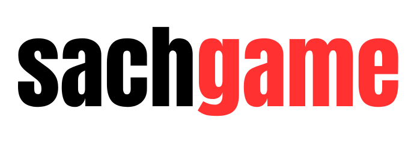
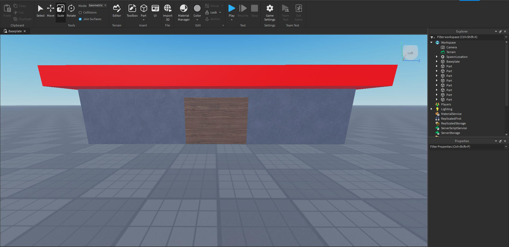
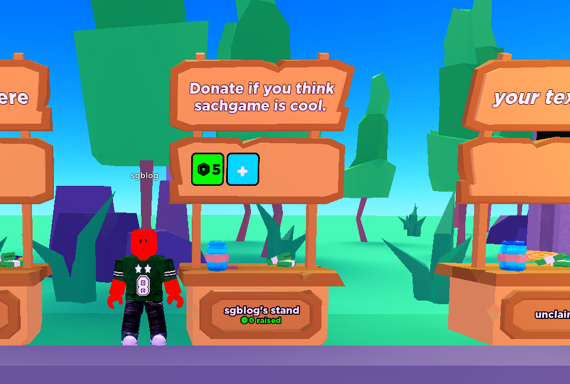
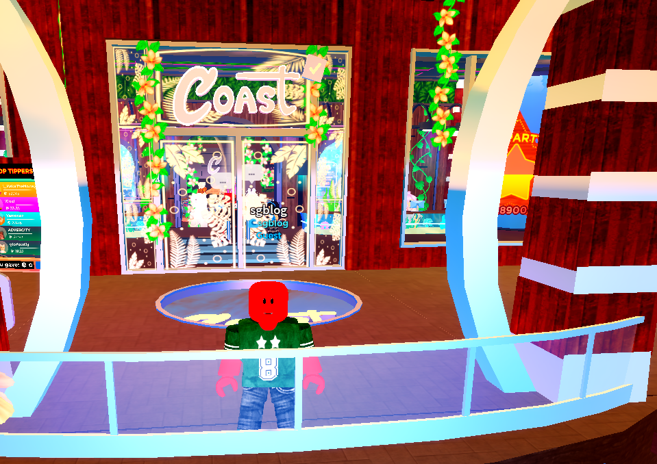

|  | ||||
Home |
Posts |
Contact |
Donate |
About |
| Methods You Can Use to Earn Yourself Robux Written by sachgame | 20th May 2023 |
||||
| The easiest way to get Robux is by purchasing the currency over the Roblox website with real-life money. The problem is that most people don’t want to spend their money on a video game, or aren’t allowed to. This article will teach you how you can earn Robux throughout the platform, without having the need to purchase it yourself. | ||||
1. Becoming a Developer |
||||
| While developing may be a hard way of earning Robux, it can also be one of the most rewarding jobs. There are different sorts of developers: Programmers, Builders, UI Designers, and Modelers. Some of the most richest players on Roblox are developers themselves, and do developing for a living! If you're wondering how, they're able to exchange Robux into real-life money using the DevEx (Developer Exchange) platform. | ||||
| To become a developer on Roblox yourself, you can download the Roblox Studio app on your PC or Mac (chances are you might already have Roblox Studio installed). Once you've downloaded the app, feel free to watch tutorials online on how you can build, script, model, or design. Otherwise, play around and get to know how Roblox Studio works. We recommend you check out the official Roblox Creator Documentation to get access to many resources to guide you through Roblox Studio. | ||||
|  | ||||
2. Doing Commissions |
||||
| Doing a commission is the same as freelancing. Commissions are when a small task is given to an individual/team and in the end, they recieve a payment. It's pretty much the same way as asking someone to mow your lawn for money. Some commissions you can sell are: Artworks, Graphics, Animations, Clothing, Building, etc. There are lots of players looking for people to do small tasks for them (eg. make an artwork of their Roblox avatar) and most of them are willing to pay a high amount of Robux in exchange. | ||||
| The only downside in making commissions are competition. There are many people on the Roblox platform that make commissions, and a lot of them are professional, so commissions are highly competitive. One way you can get around this and become a "professional" is through social media. Promoting your services and showing your artwork is a great way of standing out in the Roblox community. Most commissioners use Discord or Twitter to show their services. | ||||
3. Donation Games |
||||
| Luckily, there are some Roblox games where generous players are willing to spare some Robux for those who wish for it. In donation games, people are able to donate Robux to other players via their gamepasses or clothes they made. While the concept of donation games may sound simple, it's not really easy to earn Robux from it. This is because you'll only get Robux based on luck, players will only donate to you, if they wish to do so. A way you can earn Robux quickly is by making clothes and selling them on donation games, this gives players a reason to donate to you, so that they can have clothes. Another tip is do NOT beg on the game, this makes players try to avoid you and not donate to you. The best way to ask someone for Robux is politely ask them, and don't keep asking if they refuse to do so. | ||||
| A few donation games you can join are: PLS DONATE, starving artists, Avatar Island, Donate Spinner, Donate Game, and plenty more! (Image below is a gameplay of PLS DONATE) | ||||
|  | ||||
4. Working at Cafes/Restaurants |
||||
| Roblox has always had workplace industry games, an example is a cafe game in 2008 known as "The Iron Cafe". Originally, these types of games were made for roleplaying and having an enjoyable environment. But recently, things have started to change when these games have added tipping updates onto their games. How tipping works: Customers are able to tip workers with Robux if they feel satisfied or just wants to tip. | ||||
| But just like donation games, you'll only get tipped based on luck/if the other party wants to tip you. A tip to (not guaranteed) get Robux quickly is to treat all customers with politeness and respect, and to not beg for tips. There are a few cafes/restaurants that have a tipping worker feature: Frappé, Coast Restaurant, Kohau Hibachi Restaurant, Delights Bakery, and more! (Image below is a gameplay of Coast Restaurant) | ||||
|  | ||||
5. Entering Giveaways |
||||
| Robux giveaways are always happening somewhere! It may be hosted by a YouTuber, Discord Server Owner, Developer, etc. The best way to find giveaways is through social media. The three social media platforms that are the best to check for giveaways are: YouTube, Twitter, and Discord. | ||||
| However, you do need to be aware of what giveaways you enter. It's important that you don't enter any giveaways that ask for any private information (password, bank account, home address, etc.) Unfortunately, there are plenty of "giveaways" on the internet that turn out to be scams. A tip to avoid these scams is to check who the giveaway is from, it's more reliable to enter giveaways that are hosted by verified Roblox Star Creators, trusted people, or giveaways that don't ask for any personal information. It's also important that you do not click on any sketchy links, always check the URL before clicking on it. | ||||
Overall, it is possible to have Robux without the need to purchase it. Even though it may not be as easy as it looks, at the end of the day, you're still getting Robux. There are plenty of more ways you can earn Robux, but these are some of the best ones. (Note: This is my first article that I'm publishing online, sorry if it looks bad!) |
||||